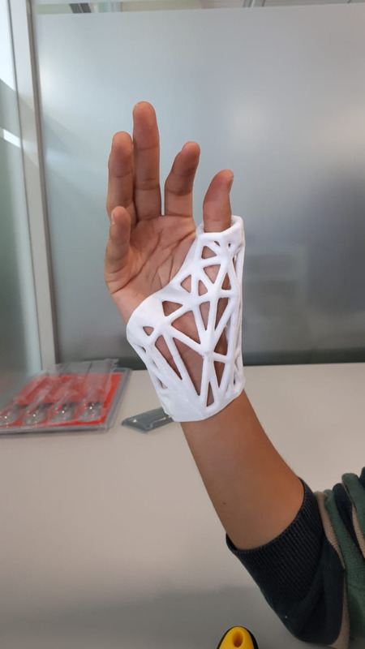
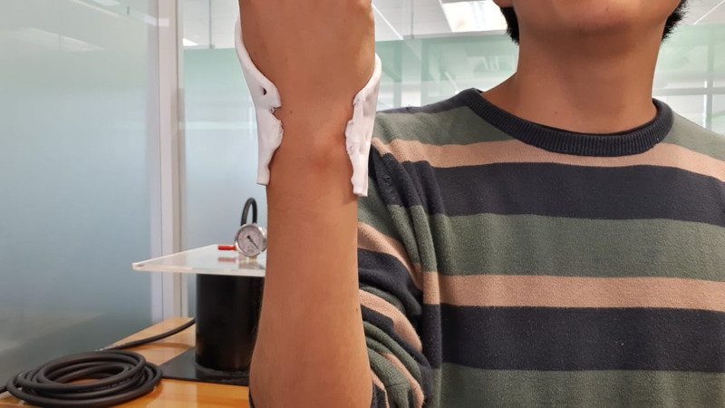
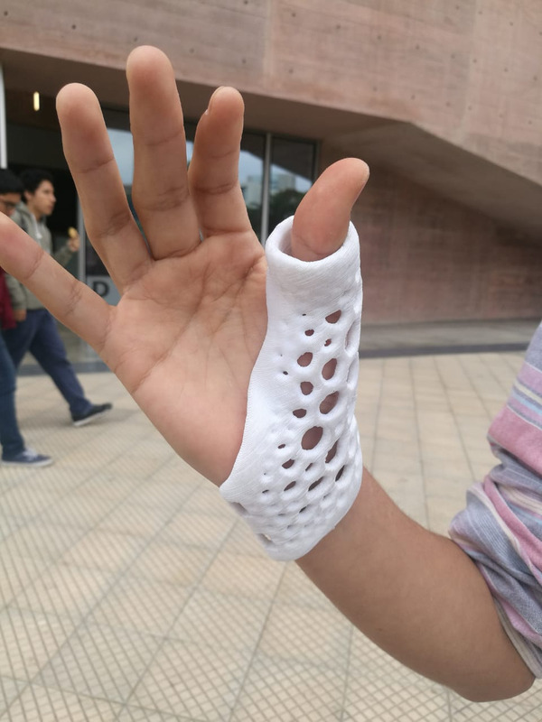
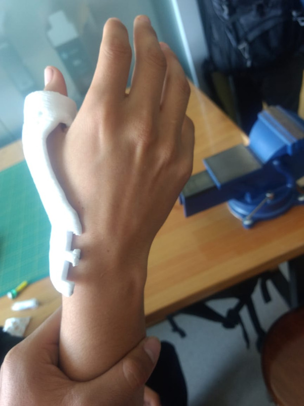
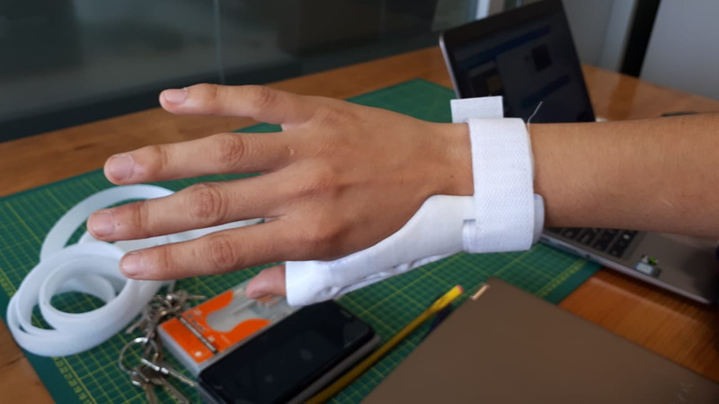
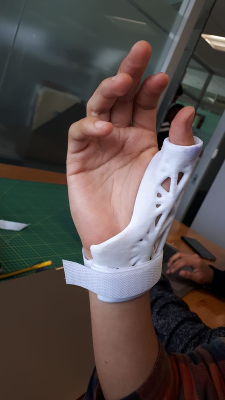
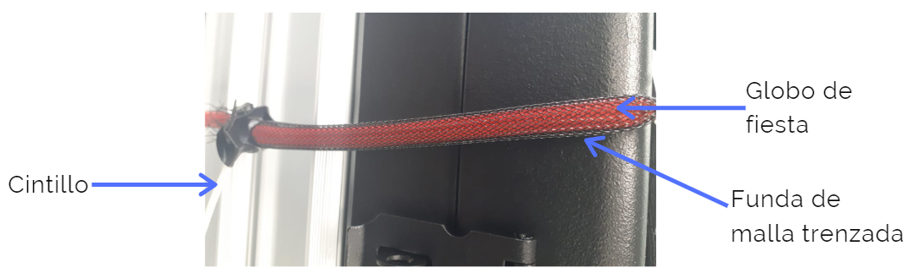

FABRICACIÓN DE LOS MÓDULOS COMPLEMENTARIOS
FABRICACIÓN DE LA PARTE EXTERNA Y MECÁNICA DEL PROTOTIPO MEDIANTE EL USO DE IMPRESIÓN 3D
En esta sección se presentará cada fabricación de la parte externa y mecánica del prototipo, asimismo la solución que se dio a esta a corto y largo plazo a cada dificultad que se dio en la impresión o corte láser en dichos instantes de la fabricación. Al inicio de la parte externa del prototipo, se desarrolló la férula. Se tuvo la primera impresión de esta, el cual, como mencionamos en la semana 8, se tuvo algunos fallos, por lo que se colocará en cada una de las que se desarrolló en orden de antigüedad.
PRIMER INTENTO
Como se mencionó en la semana 8, se cometió un error en el primer diseño de la férula puesto que no se podía encajar la mano, por lo que en dicho instante se procedió con cortar una parte de la férula para corroborar si es que dicha férula podía inmovilizar por lo menos el dedo pulgar (se presentarán imágenes de las zonas de corte en las siguientes figuras). Por lo que con ello decidimos desarrollar imprimir otro diseño en donde sí se podía hacer una zona de encaje de la mano, en donde cada zona de las partes de la férula tenga orificios en donde se colocarán correas velcro para la unión de estas.
 SEGUNDO INTENTO
Cuando se imprimió el segundo modelo del diseño de la férula, vimos que el corte creado en el programa Autodesk Meshmixer tuvo éxito a la hora de la colocación de la férula en la mano sin forzar el ingreso de esta, pero se cometió un error diferente, que los orificios creados en cada parte de la férula estaba demasiado cerca de la zona de corte del plano, por lo que se rompió una parte de la férula como se mostró. De momento estamos en desarrollo de un nuevo modelo de férula solucionando este problema, pero para seguir con el prototipo por el momento se cosió con cinta velcro encima de la férula, como se mostrará en las imágenes siguientes, esto permitió la unión de las dos partes de la férula, lo cual ocasionó una restricción en la muñeca, beneficiando la rehabilitación del paciente.
 TERCER INTENTO
En la tercera impresión, la férula salió satisfactoriamente bien. Además, nos percatamos que la parte de la muñeca de la férula que se ubica en la cara palmar de la mano no era necesaria, puesto que al colocarle cinta velcro a la otra zona de la férula y ajustarlo manualmente, esto era suficiente para que se restrinja el movimiento de la muñeca, haciendo esto que el costo de nuestro prototipo se reduzca. Asimismo, no se obtuvo ningún problema con la colocación de los huecos de la férula, así como el resquebrajamiento de las zonas con menor ancho, resaltadas dentro de un círculo rojo. Por lo tanto, esta será nuestra férula final.
 PARTES DEL MÚSCULO DE MCKIBBEN
Ahora, hablaremos del desarrollo del músculo de Mckibben, sus partes, desarrollo y pruebas de su funcionamiento y la finalidad de estas.
Para calcular la presión estimada para la contracción del músculo, probamos con los valores de 40 psi, 35 psi; estos sí comprimían lo suficiente y a una velocidad de reacción rápida, pero la microbomba CTS Diaphragm Pump, Coreless Motor no daba la presión suficiente para la contracción del músculo, solo daba 24 kPa, por lo que se cambió de microbomba. Se utilizará la microbomba LTC Diaphragm Pump, Brushless Motor puesto que la presión que da es el doble, es decir, 48 kPa, ello da una mayor contracción, pero no tiene el tiempo de reacción suficiente.
